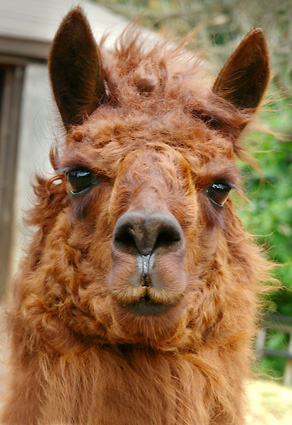

“Mary Carol caught the essential spirit and dignity in my dog. Since the death of my pet, the photographs mean all that much more to me.”
— K Koos Mantoloking, NJ“Mary Carol has the uncanny ability to show what you see in your pet. The portraits have as much personality as the pet.”
— Kim Widener Rumson, NJ“Her photos captured not only the outside of my dog, but also the inside. His personality can be seen in your pictures and that’s what makes them so special.”
— Steve Schechter Manalapan, NJ“You know instantly that Mary Carol loves what she does. Mary Carol has the patience of a saint in getting the shot you and she have in mind.”
— Carole Butler Neptune, NJ“Mary Carol makes friends with your pet, then does not quit until she captures it’s essence on film.”
— Chela St. Onge Rumson, NJ

